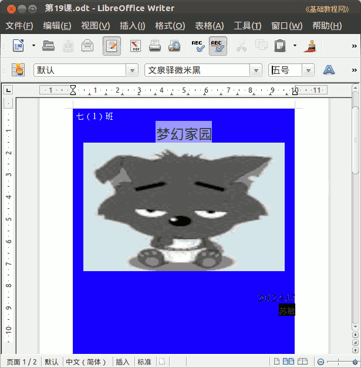

2011-2012 第二学期七年级文字处理和网页教学设计
作者：TeliuTe 来源：基础教程网
十七、学会制作杂志封面 返回目录 下一课
（一）教学设计
1、学习目标：学会制作杂志封面
2、注意事项：对齐的方式和版面设计。
3、教学过程：
1）教师准备学案和板书；
2）学生整队进入，开机抄黑板上笔记；
3）教师讲解板书演示操作；
4）学生打指法、日志、完成操作；
5）教师打勾记录学生指法成绩，检查日志和操作；
注：学生抄完笔记就开始打指法、日志，老师讲完后再继续完成；
（二）板书设计(学生笔记)
第17课 学会制作杂志封面
1、校园网、相册、右键、图片另存为
2、打开 writer、32开、保存、第17课
3、班级、刊名、期号、空两行、日期、主编
4、插入、图片、来自文件、7-1
5、设置字体、颜色、对齐、经常保存
操作图示：

（三）课后记 2012-4-17 20:08
昨天上了一个班，课已经备好了
只是没想到那个班今天还会来上
--
italc 还是一如既往的卡，看来得把校园网关了才行
内容不多，但是做起来就是慢的，前面浪费时间太多
--
4班强调习惯，爱说话开小差，注意力不集中
然后做起来又得讲两遍，得想办法改一改才好
--
估计还是校园网分心太厉害，做着就管不住自己了
要不就是所游戏单独放一个页面，或者就是强调习惯
--
准备做一个杂志系列，然后开始学网页
文字处理学的差不多了，打几篇作文进去即可
--
昨天的班又来上课，搞不清是怎么回事
竞赛调课把下一节的调过来，弄得连着上两节仓促上新课
--
差的有些顾不过来，这也是个问题
打字太慢，傻玩不想学，越拉越远
--
返回目录 下一课
本教程由86团学校TeliuTe制作|著作权所有
基础教程网：http://teliute.org/
美丽的校园……
转载和引用本站内容，请保留版权信息和本站链接。